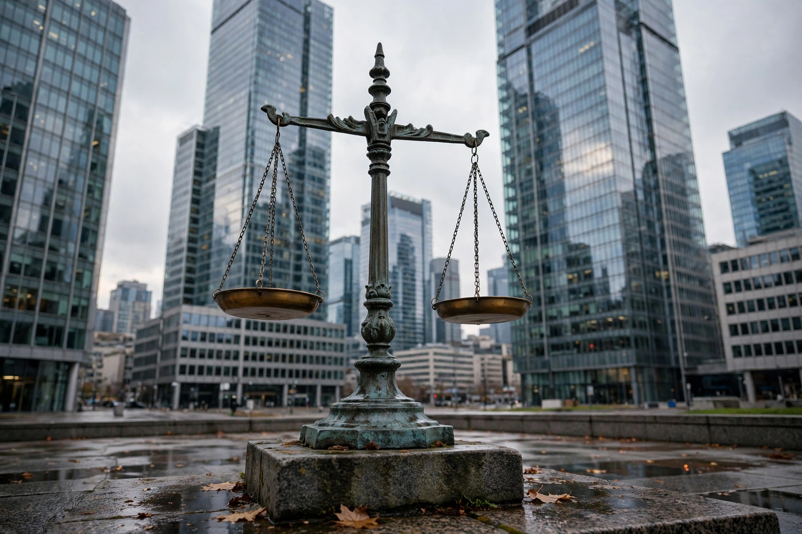

Competition law

Competition law is the body of law that promotes or seeks to maintain market competition by regulating anti-competitive conduct by companies. It is known as antitrust law in the United States. Modern competition law has historically evolved on national lines, but most countries now have a competition regime, and enforcement increasingly involves international cooperation. Through prohibitions on restrictive agreements, abuse of market power and anticompetitive mergers, competition law aims to protect consumer welfare, efficiency and the competitive process itself.
Core elements
Restrictive agreements
Agreements between undertakings that restrict competition are generally prohibited. Hardcore cartels — price fixing, output limitation, market sharing and bid rigging — are treated as the most serious infringements and may attract criminal sanctions for individuals in some jurisdictions, as well as corporate fines. Vertical agreements between firms at different levels of the supply chain are assessed more flexibly.
Abuse of dominance
Firms holding a dominant market position are prohibited from abusing it, for example through predatory pricing, refusal to supply, tying and bundling, or discriminatory conditions. In the United States, the equivalent doctrine is the prohibition of monopolisation under Section 2 of the Sherman Act, which requires both monopoly power and exclusionary conduct.
Merger control
Most regimes require large mergers and acquisitions to be notified to a competition authority and cleared before completion, so that transactions likely to substantially lessen competition can be blocked or remedied.
History
Precursors can be traced to Roman law and to early modern statutes against forestalling and monopolies, such as the English Statute of Monopolies 1623. Modern competition law begins with Canada's Anti-Combines Act of 1889 and, most influentially, the United States Sherman Antitrust Act of 1890, directed against the great industrial trusts. The Sherman Act was supplemented by the Clayton Act and the Federal Trade Commission Act, both of 1914. Landmark cases include Standard Oil Co. v. United States (1911), which dissolved the Standard Oil combination and articulated the "rule of reason", and United States v. AT&T, settled in 1982 with the breakup of the Bell System. From the mid-twentieth century, the consumer-welfare orientation associated with the Chicago School, notably Robert Bork's The Antitrust Paradox (1978), strongly influenced U.S. enforcement.
European Union law
EU competition law rests on Articles 101 and 102 of the Treaty on the Functioning of the European Union, prohibiting restrictive agreements and abuse of a dominant position affecting trade between member states, together with the EU Merger Regulation. The European Commission's Directorate-General for Competition can fine companies up to 10 per cent of worldwide turnover; its decisions, such as the series of cases against Google (shopping, Android and AdSense, 2017–2019) and the €13 billion state-aid recovery order against Apple in Ireland, are among the most prominent enforcement actions worldwide. EU law also uniquely prohibits distortive state aid under Article 107 TFEU. Decisions are subject to review by the General Court and the Court of Justice.
Enforcement and theory
Enforcement may be public, by a competition authority or public prosecutor, or private, through damages actions by injured parties (treble damages in the United States being a notable incentive). Leniency programmes, which reduce or eliminate fines for the first cartel member to confess, have become the principal tool for detecting cartels. Economists and legal scholars continue to debate the goals of competition law — consumer welfare measured by price and output, protection of the competitive process, market structure, or broader concerns about concentrated corporate power raised by the "neo-Brandeisian" movement.